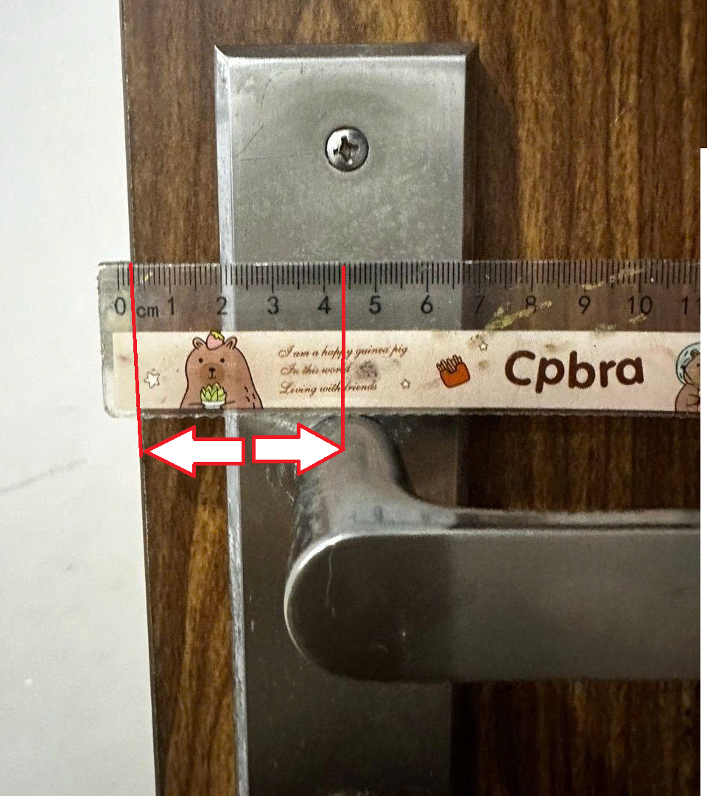

Các vấn đề thường gặp
Chọn nhóm lỗi → xem các lỗi cụ thể → xem giải pháp. Hoặc gõ từ khóa để tìm nhanh.
Video Hướng dẫn & Cài đặt
Danh sách tài liệu, video hướng dẫn cài đặt và cấu hình sản phẩm.
Công cụ Tính toán Lưu trữ & Data Camera
Ước tính dung lượng thẻ nhớ/ổ cứng hoặc dung lượng data 4G cần thiết cho hệ thống camera.
Kết quả ước tính
* Kết quả mang tính ước tính dựa trên chuẩn nén H.265 ghi hình liên tục.
Thông số thiết bị
Nhu cầu sử dụng
Kết quả dự kiến
Tổng data cho 30 ngày
Mỗi ngày tốn khoảng
Băng thông cấp
* Kết quả mang tính ước tính dựa trên chuẩn nén H.265.
Gợi ý gói cước sim 4G
Đang tính toán...
Lưu ý: Mức tiêu hao data 4G chỉ diễn ra mạnh khi mở app xem trực tiếp hoặc camera phát hiện chuyển động và đẩy video lên Cloud. Ở trạng thái chờ, camera tiêu tốn cực kỳ ít dung lượng (vài MB/ngày để duy trì kết nối). Bảng tính áp dụng cho chuẩn nén H.265.
Công cụ Đánh giá Khóa cửa
Kiểm tra thông số để xác định xem khóa có phù hợp với cửa của bạn không.
Kiểm tra độ phù hợp
Công cụ hỗ trợ đánh giá nhanh chóng
Sản phẩm bạn đang lựa chọn phù hợp nhất với KHÓA CỬA.
Hãy điền kích thước cửa
Cửa của bạn thuộc loại nào?
Đo khoảng cách tâm lỗ khóa
Hãy đo từ mép cửa đến tâm tay nắm như hình và cho biết kích thước (cm):

Hình ảnh minh họa cách đo từ mép cửa đến tâm tay nắm
Tuyệt vời!
Chúc mừng cửa của bạn phù hợp để lắp khóa.
Chưa phù hợp
Cửa không phù hợp để lắp khóa hoặc có thể phát sinh thay lõi, liên hệ shop để biết chi tiết.
Liên hệ tư vấn viênTìm kiếm thợ khóa Ezviz
Tra cứu nhanh danh sách thợ lắp đặt ủy quyền tại địa phương của bạn.
Tìm thợ ủy quyền
Lựa chọn khu vực bạn đang sinh sống
Chưa hỗ trợ
Xin lỗi hiện tại chưa có thợ ủy quyền tại khu vực này. Vui lòng liên hệ Ezviz để được hướng dẫn.
Liên hệ hỗ trợ